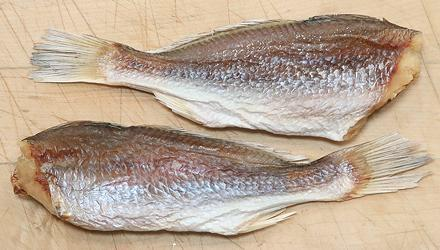
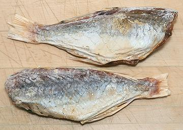

Asian Dry Salted Fish

[Xiang (China)]
Dry Salted fish is very popular in China, and used in the rest of
East and Southeast Asia. It can be very expensive depending on type of
fish and especially size. The photo specimens are Yellow Croaker, a
very prestigious fish in East Asia, fresh or dried. These were 7 inches
long and weighed 1.6 ounces each in a 7 ounce package. They were
purchased from a large Asian market in Los Angeles (San Gabriel) for
2020 US $15.29 / pound.
More on Fish - Dried, Salted & Smoked

Threadfin
is another fish considered very desirable in
salt dried form in China. The photo specimens to the left were up to 7
inches long and weighed an average of 2.3 ounces each. They were
purchased from a large Asian market in Los Angeles (San Gabriel) for
2020 US $15.29 / pound, but that market also had much larger ones,
over 12 inches long, selling for around $25.50 per pound, averaging
about $30 per fish.
Storing:
Dry Salted Fish can be kept at room temperature
in a well sealed container protected from heat and moisture.
Cooking:
Fully dried fish needs a fairly long soaking
before cooking, but not nearly as long as
Stockfish which is dried without salt. The salt retains some
water, but prevents microbial action. Salted dried fish should be soaked
for a few hours or overnight. Über expert Fuchsia Dunlop admits she
uses instead frozen Vietnamese Salted
Mackerel when at home in London.
sf_fshdsaltz 200216 - www.clovegarden.com
©Andrew Grygus - agryg@clovegarden.com - Photos on this
page not otherwise credited are © cg1 -
Linking to and non-commercial use of this page permitted